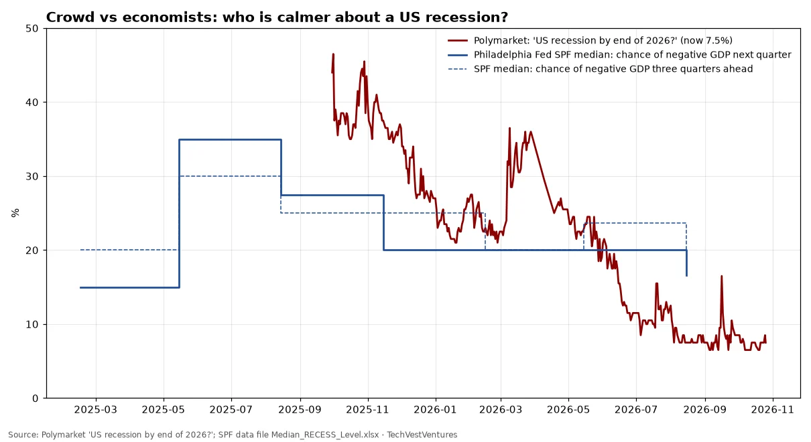

Q2. Recession Odds

Bettors have priced recession risk down steadily, from 44% in late September 2025 to 7.5% now, even as the 10-year yield crossed 5% in mid-September 2026. Professional forecasters in the Philadelphia Fed's Survey of Professional Forecasters still put the chance of a negative-GDP quarter at 16.6% for the next quarter and 20% three quarters out (Q3 2026 survey, the latest in the file). The two questions are not identical: the market asks about a recession by Dec 31, 2026 under its own rules, with about two months left, so time decay explains part of the drop. Still, the market is two to three times calmer than the experts. The next SPF survey (normally mid-November) is the next check.
Sources: Polymarket 'US recession by end of 2026?' SPF data file Median_RECESS_Level.xlsx